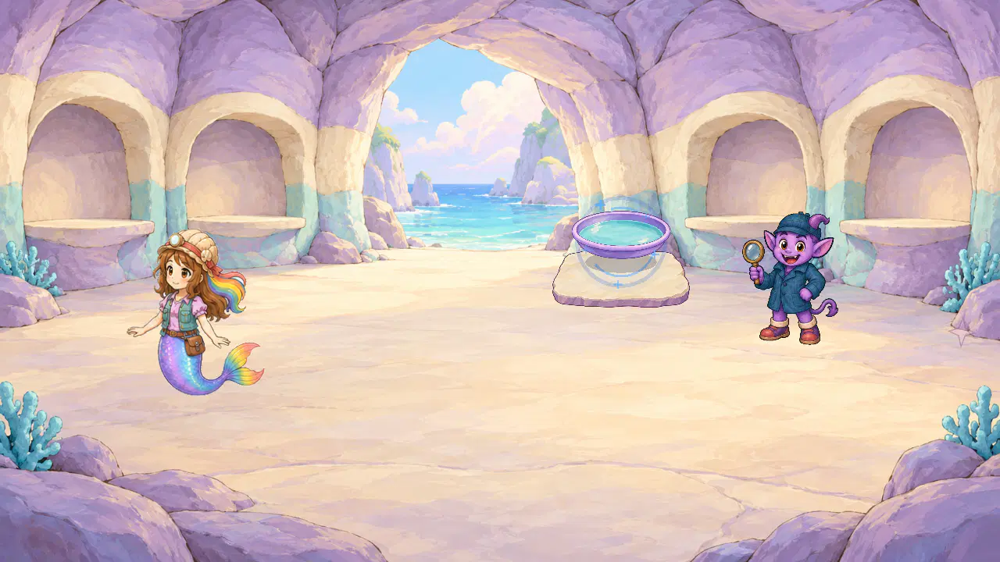
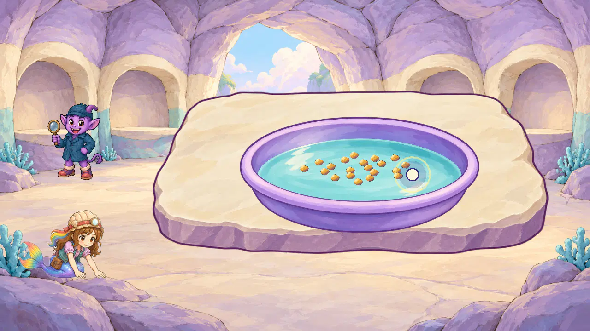
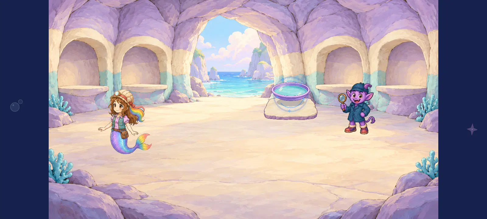
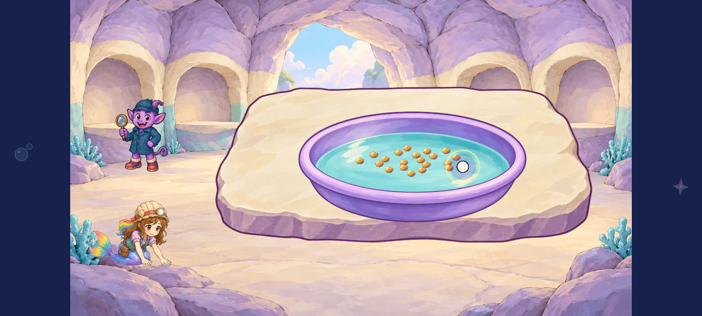
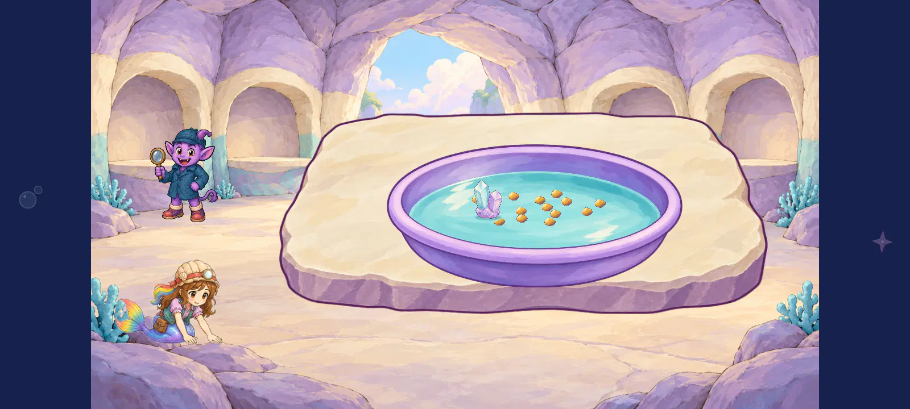

Pan contact study — every6 changed native view
6/6 directly reviewed. Intact source/ratios/grains/mineral finish4.6; static invitation/water contact4.5 provisional. Connected Roshan action2.7 and complete routes remain open.
All individual scores/hashes · Machine receipt · Complete iteration library
geologist_1280_pan_invitation_painted_staging

The intact oval pan now sits over the intact small cream/lavender slab instead of leaving the earlier gap. Isolated invitation contact reaches provisional4.5; parent halo and slight invitation bob still require naturally timed review.
object finish 4.6/5; object geometry 4.6/5; object semantics 4.6/5; slab finish 4.6/5; slab geometry 4.6/5; invitation support 4.5/5; scene style 4.4/5
Direct individual unmodified Godot4.7.2 Mobile native desktop capture at1280/1600. Only changed painted lane captured after measured contact correction; compare earlier original/literal lanes through their retained galleries. Three inherited reversals, no completion/award/save, ordinary route or device/child/owner approval.geologist_1280_pan_opened_task_painted_staging

Pan/slab maintain authored ratios4.6. New15px grain sprites show broad honey/cream/plum values4.6 with every visible grain inside the water4.6. Roshan remains remote from the pan2.7; no connected-action pass.
object finish 4.6/5; object geometry 4.6/5; object semantics 4.6/5; slab geometry 4.6/5; grain finish 4.6/5; grain containment 4.6/5; scene style 4.4/5; actor work contact 2.7/5
Direct individual unmodified Godot4.7.2 Mobile native desktop capture at1280/1600. Only changed painted lane captured after measured contact correction; compare earlier original/literal lanes through their retained galleries. Three inherited reversals, no completion/award/save, ordinary route or device/child/owner approval.geologist_1280_pan_partial_panning_reversals_painted_staging

Pan/slab maintain authored ratios4.6. New15px grain sprites show broad honey/cream/plum values4.6 with every visible grain inside the water4.6. Roshan remains remote from the pan2.7; no connected-action pass. The whole painted mineral cluster remains in the basin4.6; a restrained contact ellipse now overlaps its base and reaches provisional static water contact4.5. Naturally timed reveal, underwater depth and full action remain open.
object finish 4.6/5; object geometry 4.6/5; object semantics 4.6/5; slab geometry 4.6/5; grain finish 4.6/5; grain containment 4.6/5; mineral finish 4.6/5; mineral containment 4.6/5; mineral water contact 4.5/5; scene style 4.4/5; actor work contact 2.7/5
Direct individual unmodified Godot4.7.2 Mobile native desktop capture at1280/1600. Only changed painted lane captured after measured contact correction; compare earlier original/literal lanes through their retained galleries. Three inherited reversals, no completion/award/save, ordinary route or device/child/owner approval.geologist_1600_pan_invitation_painted_staging

The intact oval pan now sits over the intact small cream/lavender slab instead of leaving the earlier gap. Isolated invitation contact reaches provisional4.5; parent halo and slight invitation bob still require naturally timed review.
object finish 4.6/5; object geometry 4.6/5; object semantics 4.6/5; slab finish 4.6/5; slab geometry 4.6/5; invitation support 4.5/5; scene style 4.4/5
Direct individual unmodified Godot4.7.2 Mobile native desktop capture at1280/1600. Only changed painted lane captured after measured contact correction; compare earlier original/literal lanes through their retained galleries. Three inherited reversals, no completion/award/save, ordinary route or device/child/owner approval.geologist_1600_pan_opened_task_painted_staging

Pan/slab maintain authored ratios4.6. New15px grain sprites show broad honey/cream/plum values4.6 with every visible grain inside the water4.6. Roshan remains remote from the pan2.7; no connected-action pass.
object finish 4.6/5; object geometry 4.6/5; object semantics 4.6/5; slab geometry 4.6/5; grain finish 4.6/5; grain containment 4.6/5; scene style 4.4/5; actor work contact 2.7/5
Direct individual unmodified Godot4.7.2 Mobile native desktop capture at1280/1600. Only changed painted lane captured after measured contact correction; compare earlier original/literal lanes through their retained galleries. Three inherited reversals, no completion/award/save, ordinary route or device/child/owner approval.geologist_1600_pan_partial_panning_reversals_painted_staging

Pan/slab maintain authored ratios4.6. New15px grain sprites show broad honey/cream/plum values4.6 with every visible grain inside the water4.6. Roshan remains remote from the pan2.7; no connected-action pass. The whole painted mineral cluster remains in the basin4.6; a restrained contact ellipse now overlaps its base and reaches provisional static water contact4.5. Naturally timed reveal, underwater depth and full action remain open.
object finish 4.6/5; object geometry 4.6/5; object semantics 4.6/5; slab geometry 4.6/5; grain finish 4.6/5; grain containment 4.6/5; mineral finish 4.6/5; mineral containment 4.6/5; mineral water contact 4.5/5; scene style 4.4/5; actor work contact 2.7/5
Direct individual unmodified Godot4.7.2 Mobile native desktop capture at1280/1600. Only changed painted lane captured after measured contact correction; compare earlier original/literal lanes through their retained galleries. Three inherited reversals, no completion/award/save, ordinary route or device/child/owner approval.